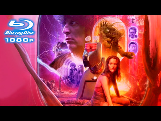
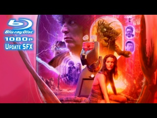
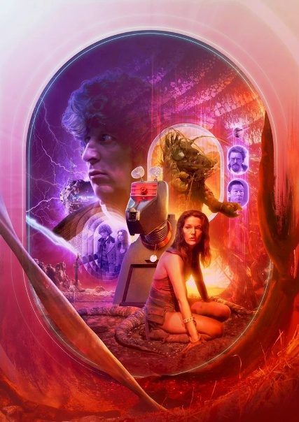
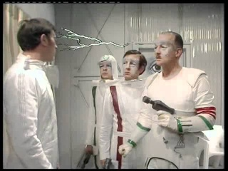

помощник
Субтитры: Русские и Английские |  |
|---|---|
с обновленными спецэффектами Субтитры: Русские и Английские |  |
с обновлением визуальных эффектов (cunningmunki) Субтитры: отсутствуют |
The Invisible Enemy
Дата выхода: 1-22 октября 1977
Формат: 4 эпизода по 25 мин.
помощник |
ТАРДИС ловит сигнал бедствия с космического корабля, и Доктор, откликнувшись, заражается невидимым вирусом — разумной частицей, которая стремится захватить его мозг и использовать для распространения. Лила и Доктор направляются на биомедицинскую станцию на астероиде Титан-3, где профессор Мариус помогает им бороться с заразой. Для спасения Доктора приходится уменьшить клон-копии его и Лилы и внедрить их в собственное тело Доктора — навстречу вирусу, обосновавшемуся в его разуме. Дебют К-9 — робота-собаки профессора Мариуса, который в финале остаётся с Доктором и станет новым спутником.
VHS - сентябрь 2002 | DVD - 16 июня 2008 |  Blu-ray - 18 марта 2024 * Версия в нашей группе |
|---|

